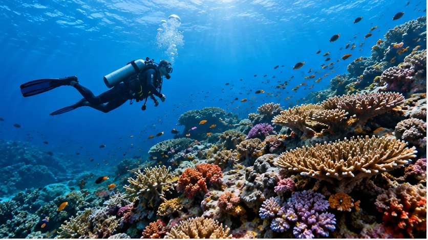

DIVE & SNORKEL
Dekat dengan laut,
dengan cara Anda.
Dari melihat terumbu dari permukaan sampai menyelam bersama pemandu, pengalaman terbaik dimulai dari kesiapan dan perencanaan yang tepat.

GUIDED DIVING
Jelajahi dengan perhatian pada keselamatan.
Beritahu kami sertifikasi, jumlah penyelaman terakhir, kenyamanan dengan arus, serta rencana tanggal Anda. Rute, pemandu, alat, dan persyaratan dikonfirmasi sebelum berangkat.
Konsultasikan diving ↗SNORKELING & ISLANDS
Keindahan yang bisa dinikmati dari permukaan.
Pilih perjalanan santai bersama teman atau keluarga. Ketentuan usia, kemampuan berenang, perlengkapan, serta cuaca dibahas sebelum pemesanan.
Tanyakan snorkeling ↗